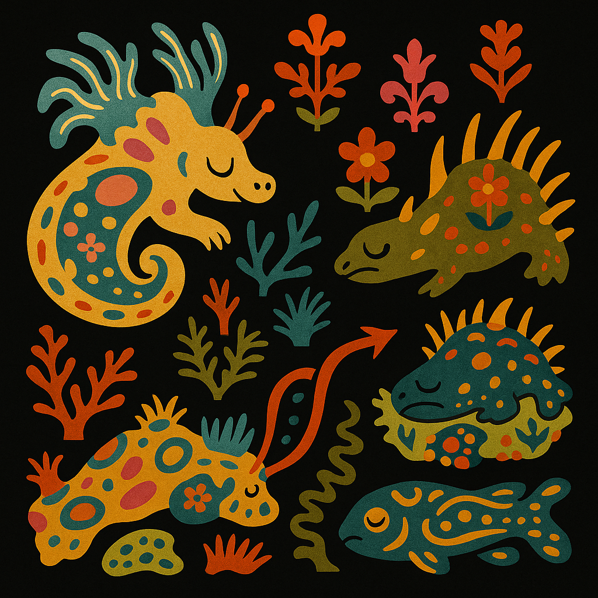

From latent space to living systems — machine learning for morphogenesis across species and scales.
Dumitrascu Group @ Columbia University

Statistical Machine Learning for Biomedical Data
statistics + machine learning + genomics
We develop computational tools for the
analysis of genomic data across
spatio-temporal scales, with the goal of
making sense of morphology and development.
Our focus is on understanding cell fate
decision making, collective behavior, and
self-organization in biological systems
through experimental design, multi-modal
data analysis, and interpretable machine
learning.